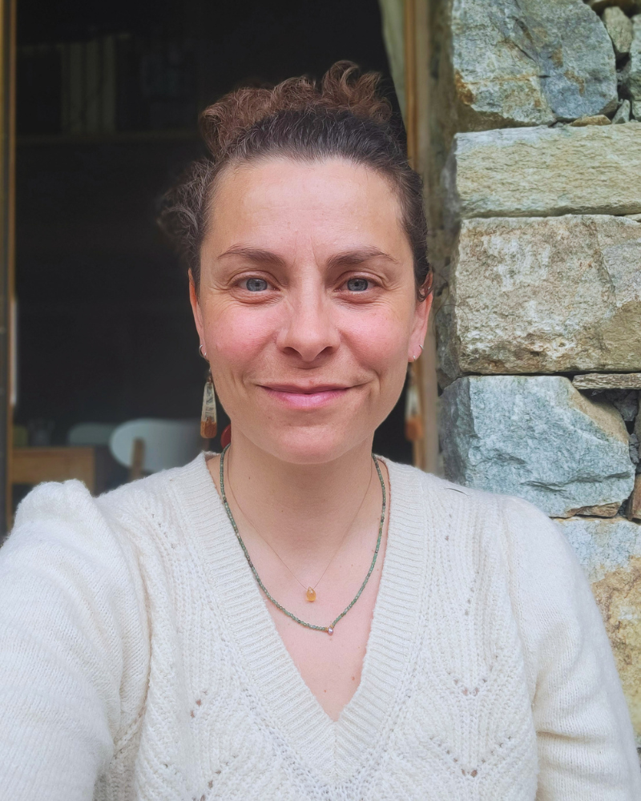

Je suis Elise, et je sais exactement ce que tu traverses

Je suis mariée, maman de trois enfants. Et aussi loin que je me souvienne, je n'ai jamais bien dormi.
Je connais tous les symptômes du manque de sommeil par cœur, parce que je les ai vécus : la fatigue qui ne lâche pas, le brouillard mental, l'irritabilité, les douleurs chroniques. Pendant longtemps, ça a été mon quotidien.
Mais ça, c'était avant.
Je suis kiné de formation, mais aussi hypnothérapeute et formée aux fleurs de Bach. En cherchant ma propre solution, j'ai compris quelque chose que personne ne m'avait dit : le sommeil ne se répare pas en changeant de matelas, mais en rééduquant son souffle et en apaisant son mental.
Aujourd'hui, j'ai à cœur de partager ce que j'ai moi-même appris. J'aide les adultes de 30 à 45 ans à transformer leurs nuits et à redonner à leur corps l'énergie d'être pleinement acteurs de leur vie, grâce à la méthode Ora Sommeil.
Une approche fondée sur quinze ans de pratique
Mon accompagnement n'a rien d'improvisé. Il s'appuie sur des années de formation et de pratique, au croisement de plusieurs disciplines.
- Kinésithérapeute diplômée d'État depuis 2010
- Spécialisée dans les troubles de l'oralité et du sommeil (formation 2024)
- Diplômée en hypnose, formée auprès de Lise Bartoli (2024)
- Formée aux fleurs de Bach auprès de Nature de Déesse (2023)
- Deux ans d'accompagnement dédié aux troubles du sommeil
Et de nombreuses autres formations au fil des années (posturologie, pédiatrie posturale, réflexes archaïques...), témoins d'une curiosité qui ne s'arrête jamais.